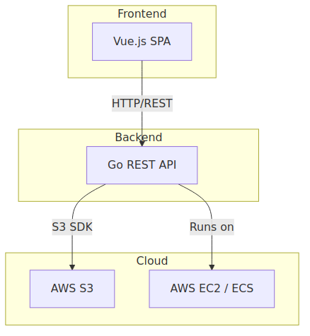
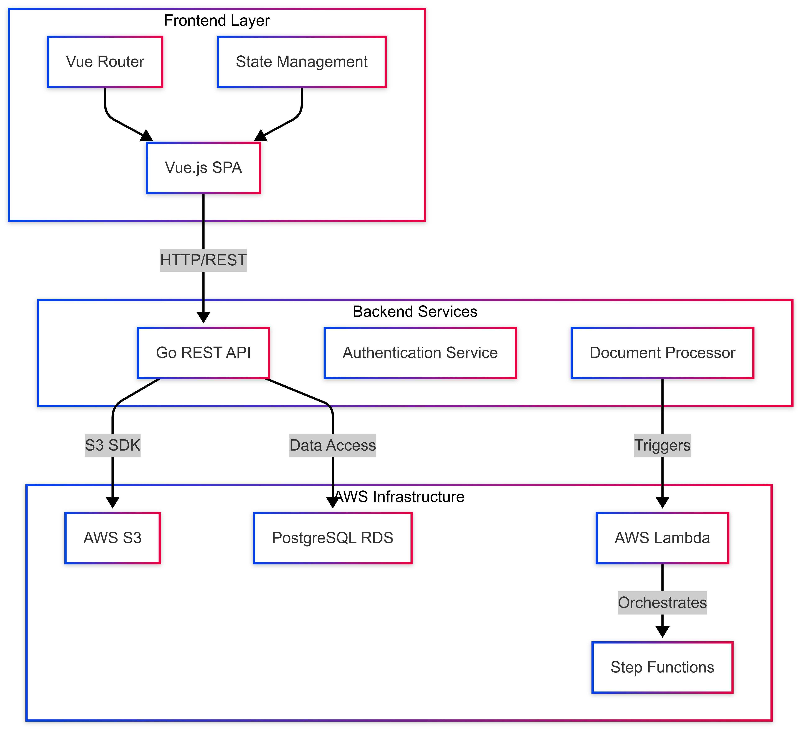

Summafy Architecture: A Technical Deep Dive
Exploring the cloud-native architecture and technical implementation of our AI-powered document processing platform
Architecture Overview

High-level system architecture showing main components and their interactions
Summafy employs a modern cloud-native architecture that leverages serverless components and microservices. This approach enables us to build a scalable, maintainable, and cost-effective platform that can handle varying workloads efficiently.
Detailed Architecture

Detailed architecture showing frontend, backend services, and cloud infrastructure components
Key Components
Frontend Application
Our frontend is built using Vue.js, providing a responsive and intuitive user interface. Key features include:
- Single-page application architecture
- Vuex for state management
- Vue Router with protected routes
- Real-time processing status updates
- WebSocket integration for live feedback
Backend Services
The backend is powered by a Go-based REST API that handles core business logic and request routing:
- High-performance request handling
- JWT-based authentication system
- Rate limiting and security middleware
- Structured logging and monitoring
Cloud Infrastructure
Our cloud infrastructure is built on AWS, utilizing serverless components for optimal scaling and cost efficiency:
- AWS Lambda for document processing
- Step Functions for workflow orchestration
- S3 for secure document storage
- Infrastructure as Code with Terraform